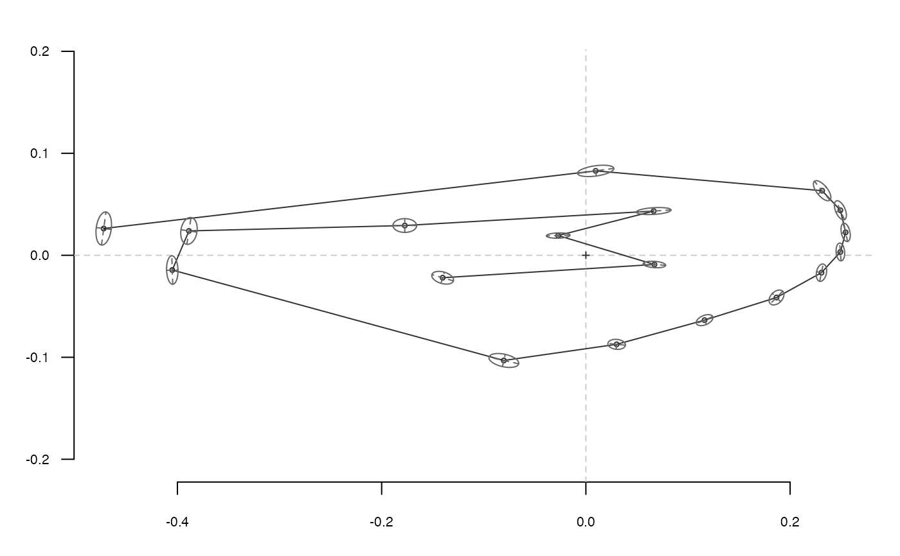

Draws confidence ellipses for landmark positions
ldk_confell(ldk, conf = 0.5, col = "grey40", ell.lty = 1, ax = TRUE, ax.lty = 2)
| ldk | an array (or a list) of landmarks |
|---|---|
| conf | the confidence level (normal quantile, 0.5 by default) |
| col | the color for the ellipse |
| ell.lty | an lty for the ellipse |
| ax | logical whether to draw ellipses axes |
| ax.lty | an lty for ellipses axes |
Other plotting functions: coo_arrows,
coo_draw, coo_listpanel,
coo_lolli, coo_plot,
coo_ruban, ldk_chull,
ldk_contour, ldk_labels,
ldk_links, plot_devsegments,
plot_table
Other ldk plotters: ldk_chull,
ldk_contour, ldk_labels,
ldk_links
ldk_confell(wings$coo)